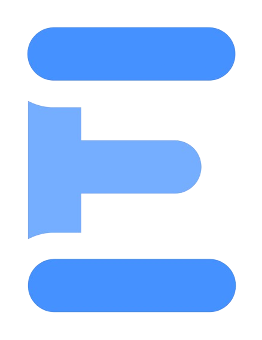

Uma palavra secreta entre dois limites alfabéticos.
Várias palavras secretas interligadas. Acerte todas para completar o tabuleiro.
ganho perdido em andamento não jogado
Cole o código (ou o link) de um jogo aleatório para jogar exatamente o mesmo jogo que outra pessoa.
Existe uma palavra secreta de 5 letras escondida em algum lugar do dicionário, entre AAAAA e ZZZZZ.
AAAAA
ZZZZZ
A cada palpite, o intervalo se aperta:
Ao lado de cada limite aparece quantas palavras do dicionário ainda existem entre ele e a secreta (1 palavra = 1 passo). Mais perto, melhor.
Em baixo do tabuleiro, o teclado mostra quais letras ainda fazem sentido como próximo caractere. Letras que cairiam fora dos limites ficam apagadas, e palpites fora do intervalo são bloqueados.
Você tem 15 tentativas. Acentos são ignorados (use só a–z).
a
z
Modo Palavra do dia: uma palavra por dia, igual para todo mundo (use o 📅 para escolher uma data anterior). Modo Aleatório: jogue quantas vezes quiser; use o 🔗 para colar o código de um jogo e jogar exatamente o mesmo.
Toque na data ou no código (no topo) para copiar um link do jogo — quem abrir cai exatamente no mesmo desafio. O botão Compartilhar no fim inclui esse link no resultado.
O botão 💡 no topo libera dicas quando o intervalo aperta. O anel ao redor mostra o progresso: primeiro ele enche conforme você acerta palpites (cor escura), depois enche enquanto o tempo passa (cor clara). A primeira dica revela a última letra; a segunda revela a penúltima.
Várias palavras secretas de 5 letras estão escondidas no tabuleiro, interligadas como em palavras cruzadas.
À direita, a lista funciona como no modo clássico: cada palpite se encaixa em ordem alfabética entre AAAAA e ZZZZZ, mostrando a distância em palavras do dicionário até a secreta mais próxima em cada direção.
Grupos de ????? indicam quantas secretas ainda existem entre dois palpites consecutivos. Quando você acerta uma secreta, ela aparece no tabuleiro e continua na lista (marcada com ✓) como um novo limite, estreitando o intervalo das secretas que ainda faltam.
?????
Palpites fora dos limites — ou em faixas já descartadas — são bloqueados.
Você tem 50 tentativas para acertar todas.
Use o 📅 para jogar as cruzadas de um dia anterior e o 🔗 para colar o código de um jogo aleatório. Toque na data ou no código (no topo) para copiar um link — quem abrir cai exatamente nas mesmas cruzadas.
O botão 💡 no topo libera até 3 dicas conforme você se aproxima das secretas. O anel ao redor mostra o progresso: primeiro enche conforme você reduz a distância (cor escura), depois enche enquanto o tempo passa (cor clara). Ao usar uma dica, você escolhe qualquer letra do tabuleiro para revelar.